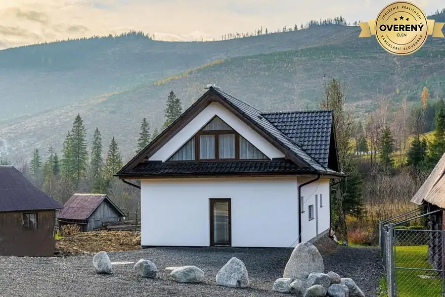
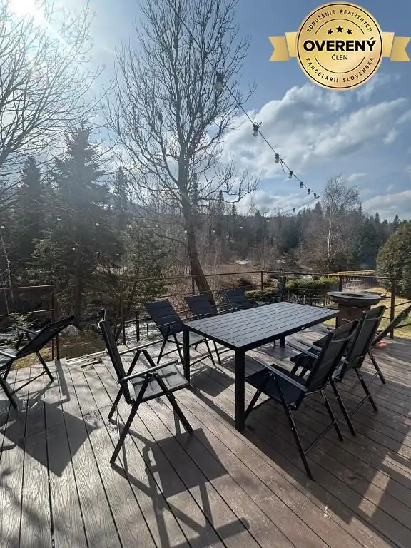
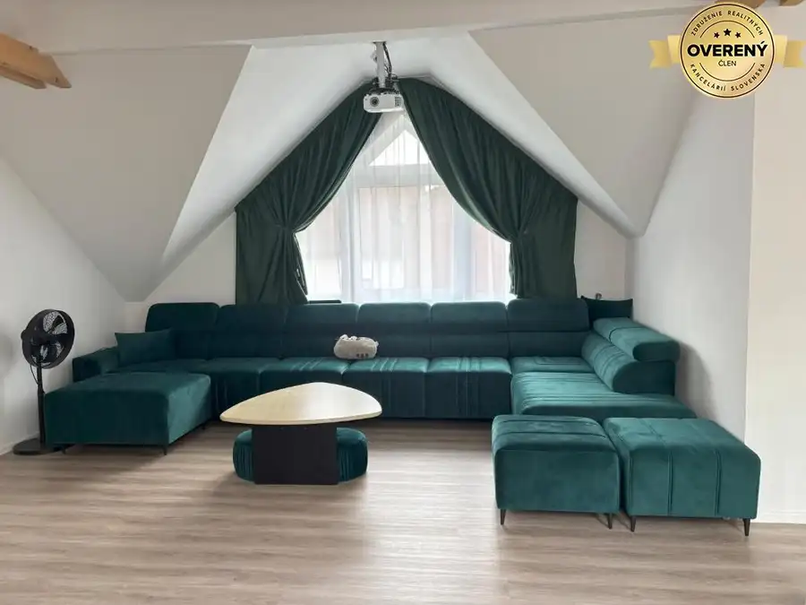
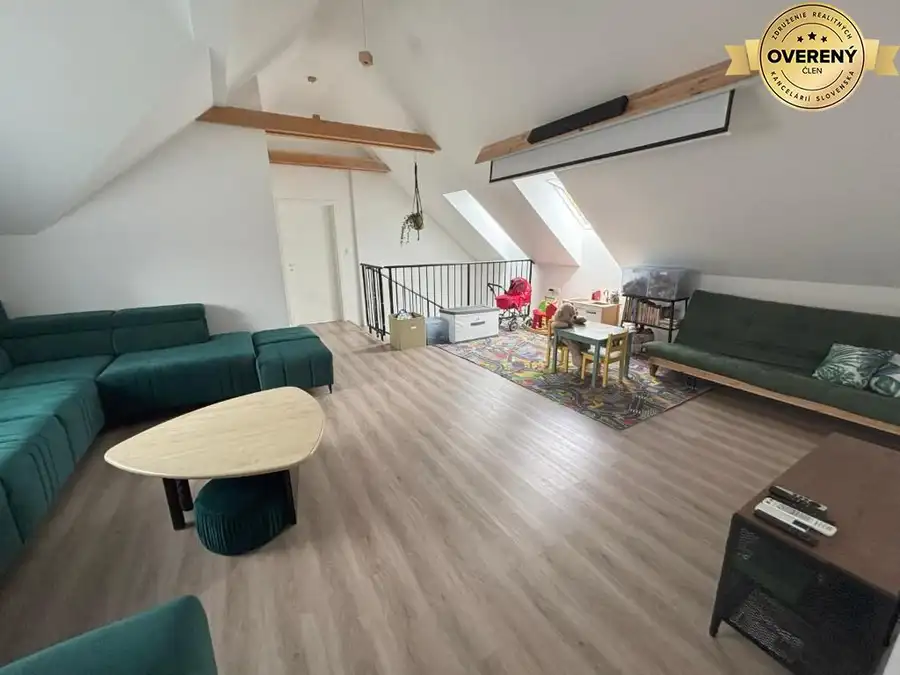
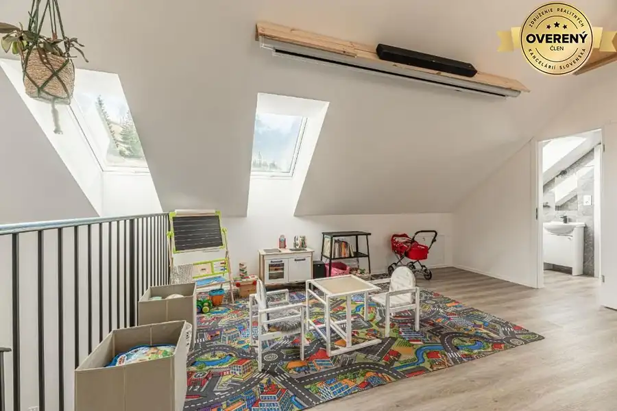
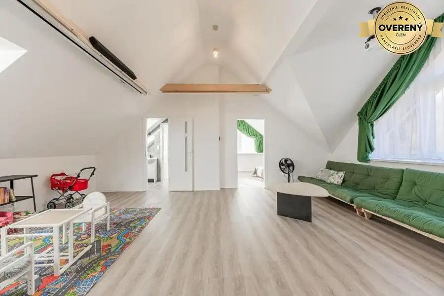
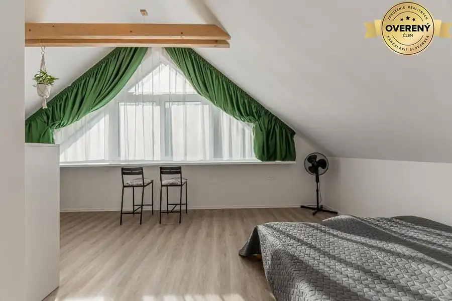
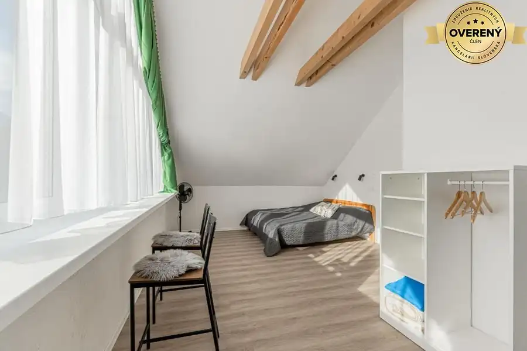
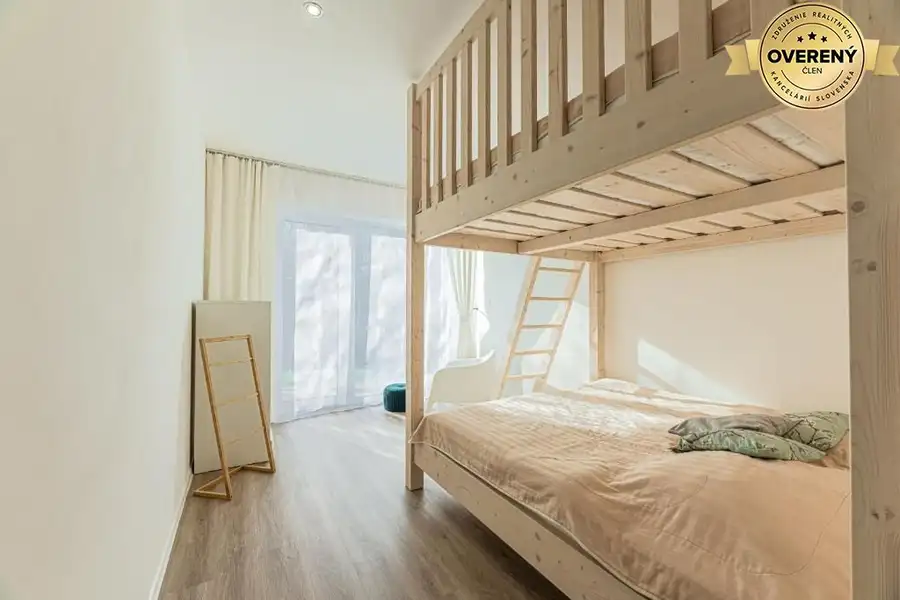
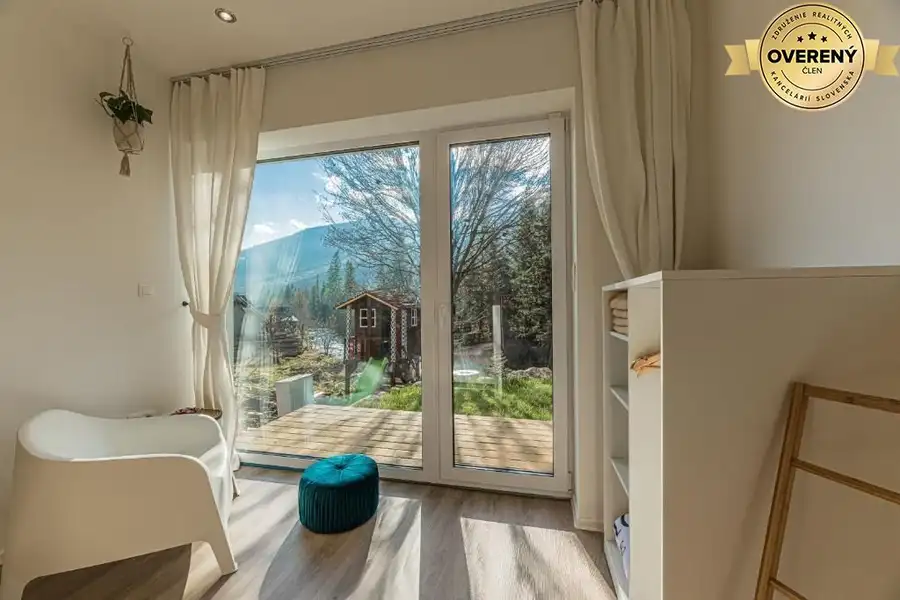

Rodinný dom v lukratívnej lokalite na prenájom
Ždiar










- Dispozícia5-izbový
- Plocha180 m²
- Stavpôvodný
O nehnuteľnosti
Naša realitná kancelária ponúka na
prenájom
atraktívny
rodinný dom priamo pod Belianskymi Tatrami
. Nachádza sa
v malebnej obci Ždiar
priamo na území TANAP-u.
Tento jedinečný dom ponúka nielen moderný komfort, luxusné vybavenie, ale aj neoceniteľný benefit bývania v bezprostrednej blízkosti prírody – kde môžete každý deň začať s výhľadom na majestátne vrchy na čerstvom horskom vzduchu.
- celková rozloha obytnej plochy 180
m²
- zastavaná plocha domu
104 m²
- priľahlý dvor
367 m² + parkovacie miesta
-
moderné prevedenie
-
moderný a funkčný dizajn
nábytku
-
kompletne zariadený
-
vzdušný a priestranný
Rodinný dom pozostáva z
prízemia a poschodia.
- Na
prízemí
sa nachádzajú 2 spálne, každá s kapacitou 4 lôžka s vlastnou kúpeľňou, kompletne vybavená kuchyňa s jedálňou, z ktorej je východ na pozemok. K dispozícii je tiež komora, technická miestnosť, vstupná chodba s lyžiarňou a technickou miestnosťou. Z obidvoch spální je východ na terasu s nádherným výhľadom na tatranské štíty.
- Na
poschodí
je rozľahlý spoločný obývací priestor, 2 spálne so samostatnou kúpeľňou a toaletou.
Dom je vhodný na
trvalé bývanie
, zároveň je možné ho
využívať ako víkendové či prázdninové rodinné sídlo v jednej z najnavštevovanejších lokalít na Slovensku. Vďaka výbornej dispozícii 4 samostatných izieb s vlastnými kúpeľňami, priestrannej obývačke a kuchyni spojenej s jedálenským kútom je ideálny taktiež na ďalší prenájom na komerčné využitie, ktorý
generuje
dlhodobo kvalitné finančné výsledky
. Nájomca tak vie
veľmi výhodne zhodnotiť danú nehnuteľnosť
.
Lokalita:
Dom je situovaný v obci Ždiar, ktorá patrí k vyhľadávanej lokalite na úpätí Belianskych Tatier a Spišskej Magury, približne 34 km od Popradu. Fantastická lokalita len 5,1 km od Chodníka Korunami stromov v Bachledovej doline poskytuje výbornú východiskovú lokalitu pre turistiku, lyžovanie alebo cyklistiku, Termálne kúpele Bania sú vzdialené len 23 km a Letisko Poprad-Tatry 32 km. Eventuálni návštevníci môžu využívať taktiež terasu s grilom a nádherným výhľadom na Tatry a taktiež detské ihrisko. Pred domom sa nachádza súkromné parkovisko.
Cena: 1200€ + 210€ Energie (plyn, elektrina, internet)
Parametre
- Rozloha pozemku
- 367 m²
- Zastavaná plocha
- 104 m²
- Úžitková plocha
- 180 m²
- Poschodie
- neuvedené
- Počet poschodí
- 2
- Počet izieb
- 5
- Stav
- pôvodný
- Status
- aktívne
- Voda
- verejný vodovod
- El. napätie
- 230V
- Plyn
- áno
- Kanalizácia
- áno
- Kúpeľňa
- áno
- Vykurovanie
- áno
- Balkón
- nie
- Lódžia
- nie
- Terasa
- áno
- Pivnica
- áno
- Parkovanie
- áno
- Postavené z
- Zmiešané
- Zariadenie
- zariadený
- Energetický certifikát
- nie
- Terén
- rovina
- Novostavba
- áno
- Dátum zverejnenia
- 2026-06-06